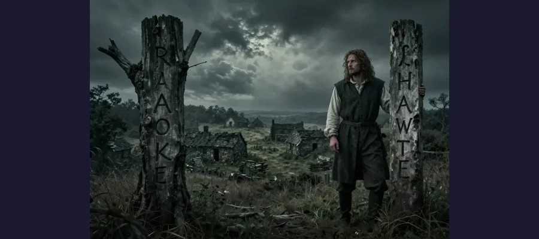
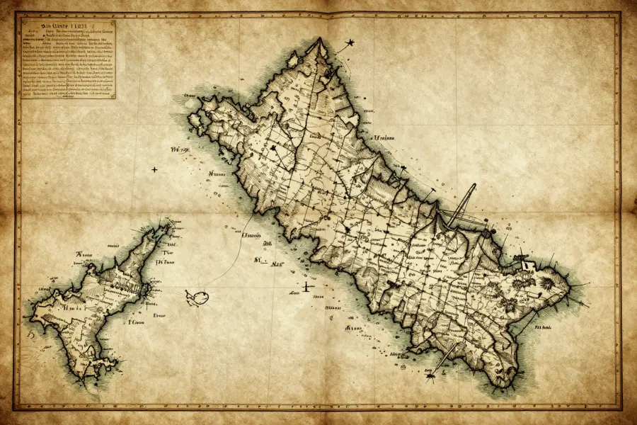

The Lost Colony of Roanoke: America's Oldest Mystery

In 1590, John White returned to Roanoke to find the entire colony vanished — with only a single word carved into a tree as a clue.
In 1587, 117 English colonists settled on Roanoke Island, off the coast of what is now North Carolina. Three years later, when their governor returned from a supply trip to England, he found the settlement completely abandoned. Every single person had vanished.
The only clue left behind was a single word carved into a wooden post: “CROATOAN.” No bodies. No signs of violence. No mass grave. Just empty buildings and that one haunting word.
Overview
A Colony That Vanished
The Roanoke Colony was England’s second attempt to establish a permanent settlement in North America. Sponsored by Sir Walter Raleigh, the expedition was led by John White, an artist and mapmaker who had previously explored the region.
The colony got off to a difficult start. They arrived too late to plant crops, and relations with local Native American tribes were tense. When supplies ran low, John White agreed to return to England for help. He left behind his daughter, Eleanor Dare, and his granddaughter, Virginia Dare — the first English child born in the Americas.
- ⛵ White departed in August 1587
- ⚔️ War with Spain delayed his return for three years
- 🏚️ When he finally returned in August 1590, the colony was empty

White found the settlement dismantled — not destroyed. The colonists had clearly left deliberately, taking their belongings with them.
👶 Virginia Dare
Virginia Dare was the first English child born in the New World, born on August 18, 1587, just days after the colonists arrived. She was among those who vanished. Her fate remains one of America’s oldest unsolved mysteries.
The Clues Left Behind
White found more than just the word “CROATOAN.” There were several clues about what happened:
📝 CROATOAN carved into a post: This was the name of a nearby island (now Hatteras Island) where the Croatoan tribe lived. Before White left, he had agreed with the colonists that they would carve the name of their destination if they moved.
🚫 No distress signal: They had agreed to carve a cross above the name if they were in danger. There was no cross, suggesting they left voluntarily.
🏚️ Buildings dismantled: The houses had been taken apart, not destroyed by force. This suggested a planned, orderly departure.
Evidence
What Happened to Them?

Recent analysis of John White’s maps has revealed hidden symbols and patches that may indicate other settlements or forts in the area.
🏝️ They went to Croatoan: The most straightforward interpretation is that the colonists moved to live with the Croatoan tribe on Hatteras Island. This would explain the carved message and the lack of signs of violence.
🔬 Modern evidence: In 2012, researchers discovered a hidden symbol on a 16th-century map created by John White. A patch on the map concealed a fort symbol at a location about 50 miles inland, suggesting the colonists may have had a planned destination.
🧬 DNA studies: Some researchers have attempted to trace descendants of the Croatoan tribe to look for English DNA markers, but results have been inconclusive so far.
Competing Explanations
Theories and Counter-Theories
🤝 Assimilation: The colonists may have been absorbed into local Native American tribes, either the Croatoans or others. Some later reports from other tribes mentioned Europeans living among them.
⚔️ Attack and destruction: Some historians believe the colonists were killed by hostile tribes, perhaps the Secota, who had clashed with earlier English explorers.
🌊 Lost at sea: A subset of colonists may have tried to sail back to England in a small boat and been lost at sea, while others went to Croatoan.
🏆 Splitting up: Perhaps the most likely scenario is that the colonists split into smaller groups — some going to Croatoan, others moving inland, and some attempting to sail away.
🗺️ The Dare Stones
In the 1930s and 1940s, a series of engraved stones purporting to tell the story of the lost colonists were found across North Carolina. Some appeared genuine, but many were later debunked as hoaxes. The debate over which stones might be authentic continues to this day.
Open Questions
American History’s Greatest Mystery
Over 400 years later, the fate of the Roanoke colonists remains uncertain. Archaeological digs on Hatteras Island and in the inland area indicated by the hidden map symbol have found some promising artifacts, but nothing definitive.
The Lost Colony of Roanoke remains one of the most enduring mysteries in American history — a story of hope, survival, and disappearance that still captivates us after more than four centuries.
📖 Recommended Reading
Want to learn more? Check out Roanoke: Solving the Mystery on Amazon for a deeper dive into this fascinating topic. (As an Amazon Associate, we earn from qualifying purchases.)
References & Further Reading
- National Park Service: Fort Raleigh and the Lost Colony
- Smithsonian Magazine: What Happened to the Lost Colony?
- National Geographic: Hidden maps reveal new Roanoke clues
- Wikipedia: Roanoke Colony overview
Editorial note: the fate of the Roanoke colonists remains unresolved with multiple competing theories. See our Editorial Policy.